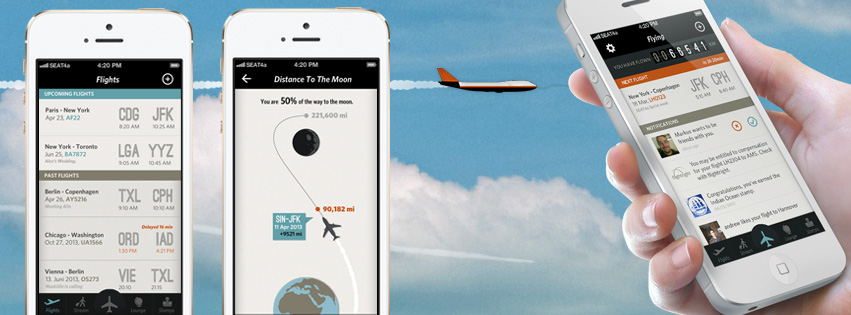
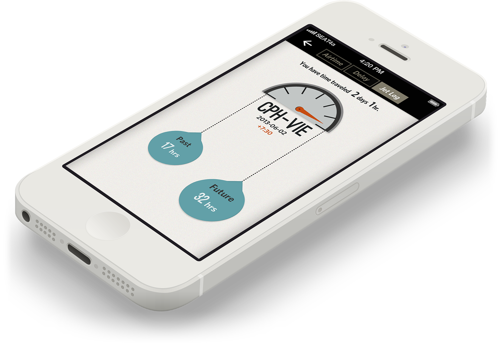
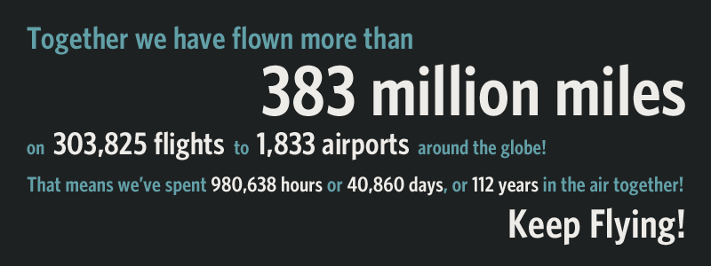
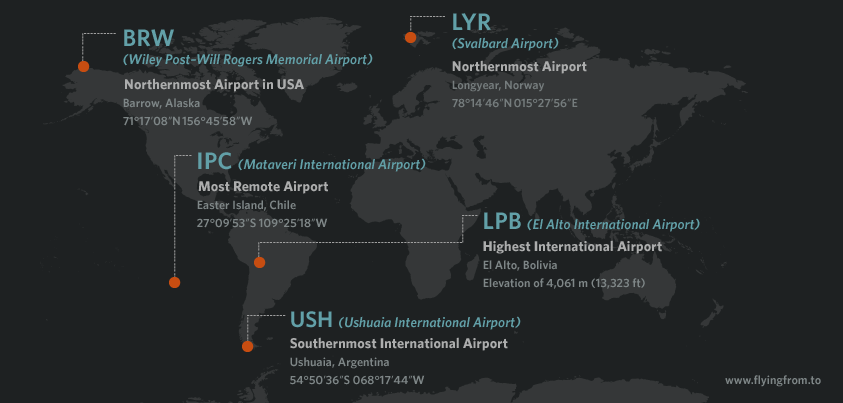
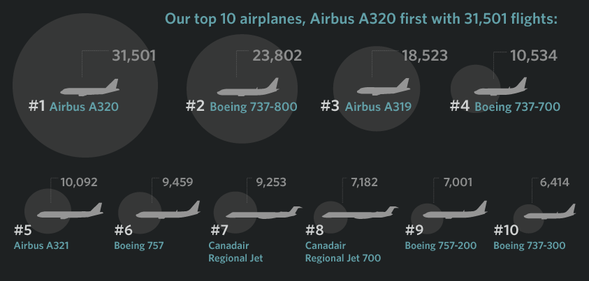

Flying
The Flying App
Our goal was for Flying to be the ultimate flight companion for all your air travel needs. From the moment you have booked your flight to the time you land, the app is a trusted partner. Flying brings together all the important elements of air travel to create something that feels right, works well and mostly importantly, is useful and indispensable to you.
To become the ultimate companion for air travel, we aimed at combining three elements: useful, insightful, and social.
The Useful side supplying real-time information about your flights, an airline independent boarding pass, and providing a marketplace for flight-related services at your fingertips. The Insightful side translating flight history and flight patterns into beautiful interactive data visualizations, providing spontaneity by earning stamps with fun facts as you fly. The Social side connecting with friends/colleagues about your travels, competing with others to see who has flown the most.
The Flying Story
Flying started as an idea in a notebook in November 2011 and was brought to life at The Copenhagen Institute of Interaction Design in May 2012 as a UI/UX concept for an iPhone app to log flights. We founded a company in September 2012 to bring our baby up in the air, and shortly after started developing the backend system along with the actual iPhone App.
What connected us as a team was a sense of nostalgia for the way flying used to be. Being on a flight used to be a momentous experience; sadly today it has become an impersonal commodity. Our goal was to make the act of flying feel special again and, along the way, to bring some of the elegance and panache back.
From day to day, we worked together remotely from Stanford, Chicago, Amsterdam, Hamburg and Vienna. We met for intensive sprint weeks in Hamburg and Berlin, and after months of long days & nights, we let the Flying App out for its first test flight in private beta, inviting the first 53 users to join us in April 2013.
In May 2013, after 9,000+ work hours, 18,527 emails, 7681 layers in Photoshop and 32,328 lines of code, we proudly launched the public beta of Flying onto the runway and into the air.
We also pitched Flying on every occasion and won Awards like VIR “Startup of the Year 2013”, LovieAwards 2013, were nominated for the German Design Award and were even featured by Apple in the App Store.
We worked hard on extending the features of Flying together with our partners: With Flightright, we notified users if they had the right to claim money from airlines for flight delays and cancellations. And we were very proud to integrate a CO2 calculation of the user’s environmental impact with our partnership with ARKTIK.
6 months after launch, we had very promising numbers. We had thousands of users, who had flown millions of miles with our app. ~6% of our users paid for our In-App purchases (which is a very good number in the industry) and we were very hopeful to start talks with new investors in early 2014, as our startup with 8 team members needed a good amount of money to further grow and expand. We even acquired the “flying.com” domain, pitched at SXSW, and worked double shifts to keep our startup alive. But unfortunately, two promising Series-A investment did not happen which left us with the decision to close down, as we did not see any further options at that time. But happily in August 2014 an US investor approached us and bought our company and the Flying app. The new owner, Status King, LCC, later shut down the app & company in 2016.
The Flying Crew (2012 - 2014)
Panos as Managing Director, took care about the financial & legal things, constantly flying across Europe to meet press, potential-investors & made deals with our business partners. He pitched our app on countless occasions and worked double-shifts in order to keep the company running. Markus put the team together and drafted the concept, roadmap and user experience of Flying. He designed the User Interface of the app, while trying to bring some order into the startup chaos as product manager. Andrew was our creative head. He worked on the app's concept and took care of creating content (much of it physical) that people care about and want to share. He beautifully shot and cut our videos, made infographics, wrote the concepts for the visualizations and created the lasercut stamps. Katie wore the visual-design-hat and designed + developed our beautiful interactive infographics, while working hard on the stressful day to day startup operations, sitting in snowy Chicago. Sebastian sitting at sunny Stanford, wrote the very first line of Flying code in October 2012, and with many months of nightshifts he developed the major parts of the iOS App, managing to study for his master in parallel. Johannes single handedly developed our reliable backend-server-system in Python on Django and also became our customer support captain on Twitter & Zendesk, sitting in Vienna next to Markus. Georg, also sitting in Vienna, joined the team in June 2013 as our iOS developer and improved plus extended the app with multiple feature-releases, worked pixel-perfect on additional infographics and became the women’s sensation with his duck-face performances at our tradeshow-booth-gigs.
Some favorite moments with the Flying team:- Panos Meyer: Co-Founder, Managing Director
- Markus Schmeiduch: Co-Founder, Product Management, Interaction Design, UX/UI Design
- Andrew Spitz: Co-Founder, Creative Direction, Marketing
- Katie Kindinger: Co-Founder, Interaction Design, Visual Design
- Sebastian Schuster: iOS Development
- Georg Molzer: iOS Development, UX/UI Design
- Johannes Lerch: Backend Development, Customer Support
And special thanks to all our friends who helped us along the way: Klemens Mantzos (iOS Development), Martin Reichart (iOS Development), CIID (for the kick that got this going), Vinay Venkatraman (priceless advice), Raureif (for setting us on the right track), @HendricRuesch (the grand networker and beta tester), @misc_at (hardcore beta-testing), Karin Botta (copy ninja), Michael Uffenbeck (iOS code help on the moon visualization), @smi (startup consulting), Benjamin Fritsch (Backend Development) and of course our families and friends for being so understanding :-)
   